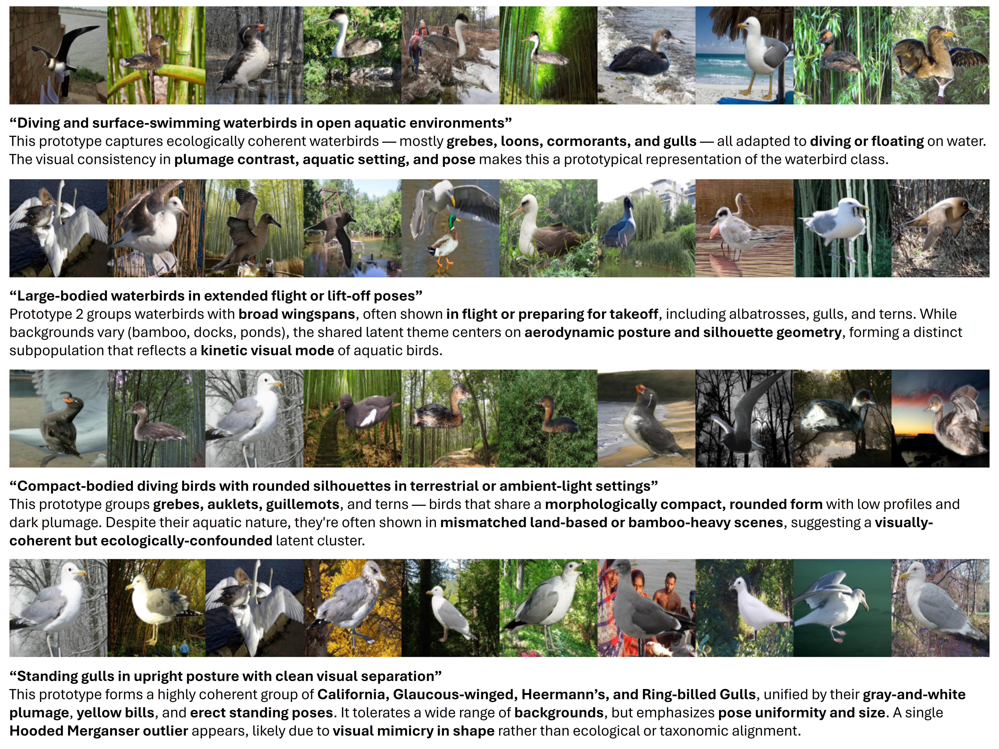
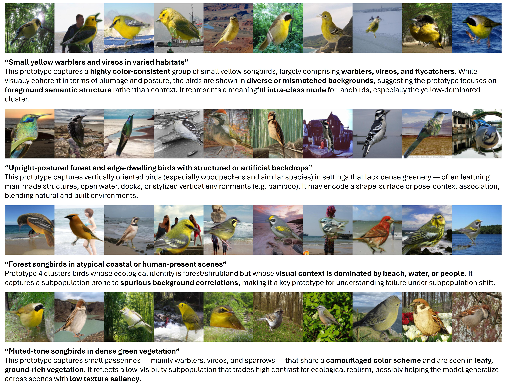
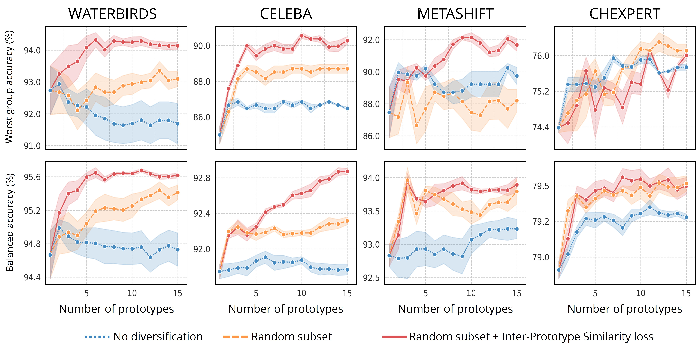

Minh Nguyen Nhat To · Paul F R Wilson · Viet Nguyen · Mohamed Harmanani · Michael Cooper
Fahimeh Fooladgar · Purang Abolmaesumi · Parvin Mousavi · Rahul G. Krishnan
Overview
Subpopulation shifts occur when the distribution of data subgroups differs between training and deployment
environments. These shifts can significantly degrade the generalization performance of machine learning models,
especially when subgroup annotations are unavailable. Existing solutions often rely on reweighting or
subgroup-specific adjustments, which require prior knowledge or annotations that are difficult to obtain in
real-world applications.
We introduce Diversified Prototypical Ensembles (DPE), a method that improves robustness by
training a collection of prototype classifiers. Each classifier is designed to focus on different subsets of the
data and different features. By encouraging diversity among ensemble members, DPE captures multiple decision
boundaries, enabling better generalization across a wide range of subpopulations.
Key Contributions:
- We propose an end-to-end framework that promotes diversity within an ensemble of prototype-based
classifiers, each capturing complementary decision rules.
- DPE replaces the standard linear head with multiple prototype heads trained using a combination of
diversification loss and sample resampling.
- We demonstrate state-of-the-art performance on nine datasets, achieving improved worst-group accuracy under
various types of subpopulation shift such as attribute imbalance, spurious correlations, and previously
unseen attribute values.
Motivation
In real-world datasets, classifiers often learn to rely on shortcuts or spurious features that correlate with
the labels in the training distribution but fail to hold in deployment. These failures are especially severe
when certain subgroups are underrepresented or shift at test time, making it difficult for the model to learn a
single decision boundary that generalizes well.
A natural solution is to move beyond a single global decision rule. When a model is encouraged to consider
multiple distinct ways to separate the data, it becomes more likely that at least one decision rule will align
with the correct semantics across diverse subpopulations. This forms the key insight behind our approach.
Rather than relying on prior knowledge of subgroup structure, we explore the feature space. By
training multiple classifiers that are explicitly encouraged to be different from one another, we can uncover a
richer set of decision boundaries that are more robust to distribution shifts.
(a) A single model trained on mixed subgroups learns a biased decision
boundary
favoring the majority. (b–d) As ensemble size increases, each model captures different subgroup patterns,
improving classification across subpopulations.
Diversified Prototypical Ensembles
DPE is a two-stage approach for improving robustness to subpopulation shifts by training an
ensemble of diverse prototype classifiers. DPE first trains a feature extractor \( f: \mathbb{R}^n \to
\mathbb{R}^d \) using standard empirical risk
minimization (ERM) on the full training data. This backbone is frozen and then used to extract features for a
small, class-balanced subset of the validation set. On top of these features, a diversified ensemble of
prototype classifiers is trained. Notably, no subgroup annotations are required in this second stage, though
they can improve balance via stratified sampling.
Prototypical Classifier
Each classifier contains a set of learnable prototypes \( \{p^{(i)}\}_{i=1}^K \), one per class. Given an
input \( x \), its class probability is computed based on its proximity to each prototype in the latent
space:
$$ P(y \mid x) = \frac{\exp\left(-D(f(x), p_y)\right)}{\sum_{i=1}^K \exp\left(-D(f(x), p_i)\right)} $$
The distance function \( D \) is scaled Euclidean distance between normalized feature vectors:
$$ D(x, y) = |d_s| \cdot \left\lVert \frac{x}{\|x\|} - \frac{y}{\|y\|} \right\rVert_2 $$
The classification loss for a data-label pair \( (x, y) \) is:
$$ \mathcal{L}(x, y) = -\log \left( \frac{\exp\left(-D(f(x), p_y)/\tau\right)}{\sum_{i=1}^K
\exp\left(-D(f(x), p_i)/\tau\right)} \right) $$
Prototypical Ensemble
Instead of a single prototype per class, DPE maintains \( N \) prototypes per class, resulting in an
ensemble \( \{p^{(k)}_j \mid k = 1, \dots, K; j = 1, \dots, N\} \). The predicted class label is computed by
averaging predictions across the ensemble:
$$ \hat{y} = \arg\max_{k \in \{1, \dots, K\}} \frac{1}{N} \sum_{j=1}^N P_j^{(k)}(y \mid x) $$
Ensemble Diversification
To prevent ensemble members from collapsing to similar decision boundaries, DPE uses two diversification
strategies:
an inter-prototype similarity loss and bootstrap aggregation across
validation samples.
The similarity loss penalizes correlated prototypes within the same class:
$$ \mathcal{L}_{\text{IPS}} = \sum_{k=1}^K \sum_{i=1}^{n} \sum_{j=1}^{n} \mathbb{1}_{\{i \ne j\}} \cdot
\frac{\left| \langle p_i^{(k)}, p_j^{(k)} \rangle \right|}{n \cdot d} $$
Here, \( \langle \cdot, \cdot \rangle \) denotes the inner product, and \( d \) is the embedding dimension.
Each prototype is also trained on a different class-balanced bootstrap sample, which encourages coverage of
different feature subspaces. Together, these mechanisms ensure that the ensemble captures a wide variety of
subgroup-relevant signals.
Strong Generalization Under Distribution Shifts
We evaluate the robustness of DPE against subpopulation shifts using nine real-world datasets
across vision, language, and medical domains.
These datasets are chosen to capture common challenges such as spurious
correlations, attribute imbalance, class imbalance, and attribute generalization, all of which can degrade model
performance under distribution shift.
The evaluation includes Waterbirds, CelebA, MetaShift,
ImageNetBG, NICO++, Living17, CheXpert,
CivilComments, and MultiNLI, using the training, validation, and test splits
provided by Yang et al. (2023). These datasets help assess model robustness when attribute or subgroup
information is available or missing.
Across a wide range of subpopulation shift scenarios, DPE consistently achieves the highest
worst-group accuracy, outperforming both classical and state-of-the-art methods. Its effectiveness
holds under missing subgroup information, challenging shift types like attribute imbalance and
generalization, and across different backbone strengths.
Robustness With and Without Subgroup Annotations
When attributes are unavailable during both training and validation, baseline methods degrade significantly.
For example, ERM achieves 69.1% worst-group accuracy (WGA) on Waterbirds and 63.2% on
CivilComments. Methods like CRT and ReWeightCRT also struggle in this setting.
In contrast, DPE performs consistently well across datasets without requiring subgroup
annotations. It surpasses DFR (65.2%) and RWY (67.5%), and achieves 76.8% WGA on CheXpert
and 84.6% on CelebA.
When subgroup annotations are available in the validation set, all methods improve. DPE achieves 94.1% on
Waterbirds and 91.7% on MetaShift, outperforming ReWeightCRT (85.1%), DFR
(81.5%), and GAP (93.8%). On CivilComments, DPE reaches 70.8%, exceeding CRT and DFR.
Worst-Group Accuracy (Without Subgroup Annotations)
The top section presents SubpopBench-style baselines using an ERM backbone.
The bottom section includes recent state-of-the-art methods and our method using a stronger ERM*
backbone.
| Algorithm |
Waterbirds |
CelebA |
CivilComments |
MultiNLI |
MetaShift |
CheXpert |
ImageNetBG |
NICO++ |
Living17 |
| ERM |
69.1 ±4.7 |
57.6 ±0.8 |
63.2 ±1.2 |
66.4 ±2.3 |
82.1 ±0.8 |
41.7 ±3.4 |
76.8 ±0.9 |
35.0 ±4.1 |
48.0 ±1.5 |
| CRT |
76.3 ±0.8 |
69.6 ±0.7 |
67.8 ±0.3 |
65.4 ±0.2 |
83.1 ±0.0 |
74.6 ±0.4 |
78.2 ±0.5 |
33.3 ±0.0 |
– |
| ReWeightCRT |
76.3 ±0.2 |
70.7 ±0.6 |
64.7 ±0.2 |
65.2 ±0.2 |
85.1 ±0.4 |
75.1 ±0.2 |
77.5 ±0.7 |
33.3 ±0.0 |
– |
| DFR |
89.0 ±0.2 |
73.7 ±0.8 |
64.4 ±0.1 |
63.8 ±0.0 |
81.4 ±0.1 |
75.8 ±0.3 |
74.4 ±1.8 |
38.0 ±3.8 |
– |
| ERM + DPE |
91.0 ±0.5 |
81.9 ±0.2 |
69.9 ±0.9 |
69.3 ±0.8 |
84.1 ±1.5 |
– |
87.9 ±0.6 |
50.0 ±0.0 |
54.0 ±4.0 |
| ERM* |
77.9 ±3.0 |
66.5 ±2.6 |
69.4 ±1.2 |
66.5 ±0.7 |
80.0 ±0.0 |
75.6 ±0.4 |
86.4 ±0.8 |
33.3 ±0.0 |
53.3 ±0.9 |
| RWY |
86.1 ±0.7 |
82.9 ±2.2 |
67.5 ±0.6 |
68.0 ±1.9 |
– |
– |
– |
– |
– |
| AFR |
90.4 ±1.1 |
82.0 ±0.5 |
68.7 ±0.6 |
73.4 ±0.6 |
– |
– |
– |
– |
– |
| ERM* + DPE |
94.1 ±0.2 |
84.6 ±0.8 |
68.9 ±0.6 |
70.9 ±0.8 |
83.6 ±0.9 |
76.8 ±0.1 |
88.1 ±0.7 |
50.0 ±0.0 |
63.0 ±1.7 |
Worst-Group Accuracy (With Subgroup Annotations)
The top section reproduces SubpopBench baselines using the same ERM backbone. The bottom includes results
from
original papers and our method (DPE) applied to a stronger ERM* backbone.
Bold and underlined values indicate the best result per group, bold values indicate the second-best.
DPE denotes our diversified prototypical ensemble. Group Info denotes the use of
group labels during training and/or validation:
❌/❌: no group info, : validation group info only,
❌/✔️✔️: group info used for training and tuning, ✔️/✔️: full group labels
required.
| Algorithm |
Group Info (Train/Val) |
Waterbirds |
CelebA |
CivilComments |
MultiNLI |
MetaShift |
CheXpert |
| ERM |
❌/❌ |
69.1 ±4.7 |
57.6 ±0.8 |
63.2 ±1.2 |
66.4 ±2.3 |
82.1 ±0.8 |
41.7 ±3.4 |
| CRT |
❌/✔️ |
76.3 ±0.8 |
70.4 ±0.4 |
68.5 ±0.0 |
65.4 ±0.1 |
83.1 ±0.0 |
74.0 ±0.2 |
| ReWeightCRT |
❌/✔️ |
76.3 ±0.2 |
71.1 ±0.5 |
68.2 ±0.4 |
65.3 ±0.1 |
85.1 ±0.4 |
73.9 ±0.2 |
| DFR |
❌/✔️✔️ |
89.0 ±0.2 |
86.3 ±0.3 |
66.5 ±0.2 |
63.8 ±0.0 |
81.5 ±0.0 |
75.4 ±0.6 |
| ERM + DPE |
❌/✔️✔️ |
91.0 ±0.4 |
87.7 ±0.6 |
71.5 ±0.6 |
74.8 ±0.3 |
87.9 ±0.7 |
– |
| ERM* |
❌/❌ |
77.9 ±3.0 |
66.5 ±2.6 |
69.4 ±1.2 |
66.5 ±0.7 |
80.0 ±0.0 |
75.6 ±0.4 |
| Group DRO |
✔️/✔️ |
91.4 ±1.1 |
88.9 ±2.3 |
70.0 ±2.0 |
77.7 ±1.4 |
– |
– |
| RWG |
✔️/✔️ |
87.6 ±1.6 |
84.3 ±1.8 |
72.0 ±1.9 |
69.6 ±1.0 |
– |
– |
| JTT |
❌/✔️ |
86.7 |
81.1 |
69.3 |
72.6 |
– |
– |
| CnC |
❌/✔️ |
88.5 ±0.3 |
88.8 ±0.9 |
68.9 ±2.1 |
– |
– |
– |
| SSA |
❌/✔️✔️ |
89.0 ±0.6 |
89.8 ±1.3 |
69.9 ±2.0 |
76.6 ±0.7 |
– |
– |
| DFR* |
❌/✔️✔️ |
92.9 ±0.2 |
88.3 ±1.1 |
70.1 ±0.8 |
74.7 ±0.7 |
– |
– |
| GAP (Last Layer) |
❌/✔️✔️ |
93.2 ±0.2 |
90.2 ±0.3 |
– |
74.3 ±0.2 |
– |
– |
| GAP (All Layer) |
❌/✔️✔️ |
93.8 ±0.1 |
90.2 ±0.3 |
– |
77.8 ±0.6 |
– |
– |
| ERM* + DPE |
❌/✔️✔️ |
94.1 ±0.4 |
90.3 ±0.7 |
70.8 ±0.8 |
75.3 ±0.5 |
91.7 ±1.3 |
76.0 ±0.3 |
Standard Accuracy (with Attribute Annotations)
(Click to expand)
The table below reports average accuracy for each method across datasets.
| Algorithm |
Group Info |
Waterbirds |
CelebA |
CivilComments |
MultiNLI |
MetaShift |
CheXpert |
| ERM |
×/× |
84.1±1.7 |
95.0±0.1 |
85.4±0.2 |
80.9±0.3 |
91.5±0.2 |
88.6±0.7 |
| CRT |
×/✓ |
89.2±0.1 |
94.1±0.1 |
83.0±0.0 |
80.2±0.0 |
91.5±0.0 |
79.1±0.1 |
| ReWeightCRT |
×/✓ |
89.4±0.3 |
94.2±0.1 |
83.4±0.0 |
80.2±0.0 |
91.3±0.1 |
79.0±0.0 |
| DFR |
×/✓✓ |
92.2±0.2 |
91.2±0.1 |
81.3±0.0 |
80.2±0.0 |
90.5±0.4 |
78.9±0.2 |
| ERM + DPE |
×/✓✓ |
92.5±0.2 |
89.8±0.2 |
82.2±0.2 |
81.3±0.2 |
91.2±0.1 |
– |
| ERM* |
×/× |
92.1±0.2 |
94.0±0.2 |
83.3±1.4 |
81.9±0.2 |
93.2±0.1 |
79.4±0.3 |
| Group DRO |
✓/✓ |
93.5 |
92.9 |
88.9 |
81.4 |
– |
– |
| RWG |
✓/✓ |
– |
– |
– |
– |
– |
– |
| JTT |
×/✓ |
93.3 |
88.0 |
91.1 |
78.6 |
– |
– |
| CnC |
×/✓ |
90.9±0.1 |
89.9±0.5 |
81.7±0.5 |
– |
– |
– |
| SSA |
×/✓✓ |
92.2±0.9 |
92.8±0.1 |
88.2±2.0 |
79.9±0.87 |
– |
– |
| DFR* |
×/✓✓ |
94.2±0.4 |
91.3±0.3 |
87.2±0.3 |
82.1±0.2 |
– |
– |
| GAP (Last Layer) |
×/✓✓ |
94.6±0.2 |
91.7±0.2 |
– |
81.9±0.0 |
– |
– |
| GAP (All Layer) |
×/✓✓ |
95.6±0.1 |
91.5±0.1 |
– |
82.5±0.1 |
– |
– |
| ERM* + DPE |
×/✓✓ |
96.0±0.1 |
91.9±0.3 |
81.6±0.2 |
81.6±0.2 |
93.8±0.5 |
79.0±0.2 |
Attribute Imbalance and Generalization
Attribute imbalance and attribute generalization remain difficult for most methods. As reported in prior
benchmarks, even strong methods like GroupDRO and JTT fail to show consistent gains in these scenarios.
DPE addresses these challenges directly. It achieves the highest WGA on both attribute-imbalanced datasets
like CheXpert and CivilComments, and attribute-generalization benchmarks
such as NICO++ and Living17. By promoting diversity across prototypes, DPE
generalizes beyond the dominant attributes present in training.
Disentangling Backbone Effects
To isolate the effect of DPE from that of the feature extractor, the authors compare DPE on both standard
ERM and an enhanced ERM* backbone. DPE consistently improves WGA regardless of the backbone.
On Waterbirds, WGA improves from 69.1% (ERM) and 77.9% (ERM*) to 91.0% and 94.1%
with DPE, respectively. On CelebA, WGA increases from 57.6% to 81.9% (ERM+DPE), and from
66.5% to 84.6% (ERM*+DPE). Similarly, on MultinLI, WGA improves from 66.4% to
69.3% and from 66.5% to 70.9% when DPE is added.
These results confirm that DPE’s improvements come from prototype diversification, not just better
representations, making it a modular enhancement applicable across training pipelines.
Exploratory Analysis of Prototype–Subgroup Alignment
To better understand the semantic structure captured by the Diversified Prototypical Ensemble (DPE), we
conducted an exploratory analysis on the Waterbirds dataset. For each prototype, we retrieved
its top-10 closest validation samples and analyzed the emerging patterns using ChatGPT. As visualized below, the
learned prototypes show consistent alignment with ecologically or visually meaningful subpopulations, even
though no subgroup labels were used during training.
In the Waterbirds class, the prototypes capture structured concepts such as aquatic divers,
large-bodied birds in flight, and compact seabirds in bamboo-heavy or terrestrial environments. In the Landbirds
class, the clusters reflect postural cues, background settings, and spurious correlations like songbirds
appearing in human-made or beach scenes.
These findings suggest that DPE facilitates implicit subgroup discovery through diversification, which may
contribute to its strong performance on worst-group accuracy.

Waterbird Prototypes. Each row shows the top-10 validation samples nearest to one
of the prototypes learned for the Waterbirds class. Patterns include aquatic divers, birds in flight,
terrestrial seabirds, and upright gulls, as interpreted by ChatGPT.

Landbird Prototypes. Each row shows the top-10 validation samples closest to a DPE
prototype for the Landbirds class. Learned clusters correspond to postural variation, ecological context,
and background-driven biases such as birds in human-made settings.
Effect of Ensemble Diversification Strategies
The figure below extends the results from the main paper (Figure 5) to four datasets, illustrating how different
ensemble diversification strategies impact both worst-group accuracy and balanced accuracy as the number of
ensemble members increases. The comparison includes three methods:
- Training each prototype on a fixed data subset (no diversification)
- Training on random subsets for each ensemble member
- Combining random subset selection with inter-prototype similarity loss
The combined strategy consistently yields the best worst-group accuracy across datasets. This highlights the
importance of combining both explicit (loss-based) and implicit (sampling-based) diversification to ensure broad
coverage of the data distribution and robustness to subpopulation shifts.

(a) Effect of different ensemble diversification methods
on performance with increasing
ensemble size. The combination of sampling and similarity loss provide the most robust improvement in
worst-group and balanced accuracy.
Limitations
DPE introduces additional complexity due to its ensemble structure and hyperparameters, though this is offset by
improved robustness without requiring subgroup labels. The method remains efficient, adding only a few minutes
per prototype when trained on pre-extracted features. While empirical results are strong, a formal theoretical
explanation for why prototype diversification improves worst-group accuracy is lacking. Our exploratory analysis
suggests semantic alignment with latent subgroups, but a rigorous understanding remains an open research
direction.
BibTeX
@inproceedings{to2025dpe,
title={Diverse Prototypical Ensembles Improve Robustness to Subpopulation Shift},
author={To, Minh Nguyen Nhat and Wilson, Paul F R and Nguyen, Viet and Harmanani, Mohamed and Cooper, Michael and
Fooladgar, Fahimeh and Abolmaesumi, Purang and Mousavi, Parvin and Krishnan, Rahul},
booktitle={International Conference on Machine Learning (ICML)},
year={2025}
}